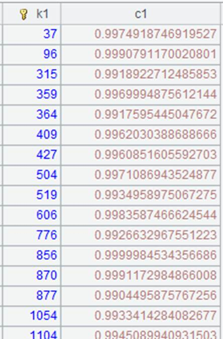

Description:
Get records from a multicursor.
Syntax:
mcs.fetch()
Note:
The function gets all records from a multicursor. The order of the resulting records could be different from their orginal order.
Parameters:
|
mcs |
Multicursor |
Return value:
Record sequence
Example:
|
|
A |
|
|
1 |
=file("D:/txt_files/orders.txt").cursor@m() |
Return a multicursor |
|
2 |
=A1.fetch() |
Fetch records from a multicursor |
|
3 |
=file("D://tb1.txt").import() |
tb1.txt contains 10w rows |
|
4 |
=A3.cursor() |
Generate an ordinary cursor |
|
5 |
=A4.fetch(15000) |
Fetch the first 15000 rows
|
|
6 |
=A3.cursor@m(10) |
Generate a multicursor |
|
7 |
=A6.fetch(15000) |
Fetch the first 15000 rows  Here the fetched records are different from those in A5. With a multicursor, data is fetched from each cursor and then unioned; while with an ordinary cursor, data is sequentially fetched |